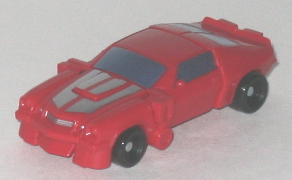
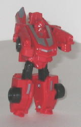
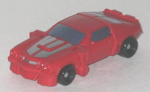
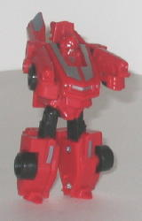
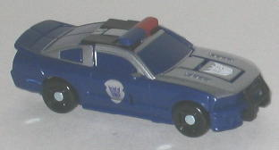
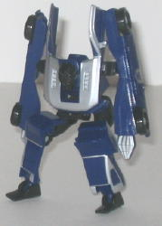

 
Allegiance: Autobot
Size : Legend
Difficulty of Transformation : Very Easy
Color Scheme : Red, black, and some silver and light metallic silvery blue
Rating : 5.5
 Cliffjumper
vs. Recon Barricade ("Allspark Battles" Legends)
Cliffjumper
vs. Recon Barricade ("Allspark Battles" Legends)
Price
: ~$8 U.S.
Overall Rating
: 6.5
 Cliffjumper
Cliffjumper


Allegiance:
Autobot
Size
: Legend
Difficulty of Transformation
: Very
Easy
Color Scheme
: Red, black, and some
silver and light metallic silvery blue
Rating
: 5.5
(NOTE: Because this is a repaint, this is not a full-blown review. This mainly covers any changes made to the mold and the color scheme, and merely compares it to the original Legends class Bumblebee toy. For a review on the mold itself, read the review of the original Legends class Bumblebee toy here .)
Unlike the repaints of
other Movie Bumblebee molds into this character, Legends class Cliffjumper
is a repaint of the '70s version of the Camaro. His stripes are also a
bit different than on the other Cliffjumper toys-- the stripes on the front
hood are silver and the same design as Legend Bumblebee's, not rounded
stripes with black borders. I honestly prefer the rounded stripes, as it
differentiated Cliffjumper from just being a "red Bumblebee", whereas that
distinction isn't nearly as obvious here. Bumblebee's black stripes are
silver on Cliffjumper, but other than those two major color changes Cliffjumper
is essentially the same as Bumblebee. The black parts on Bumblebee are
all black on Cliffjumper, even though on Cliffjumper's other toys those
parts are a bluish-black. His paint app placements are nearly all the exact
same, including the weird "mustache-like" paint apps on his face in robot
mode, which I really wish they would've changed. The only exception is
that Bumblebee's rear stripes, which were actually PAINTED OVER the molded-in
rear windows, have been removed and the rear windows painted like the other
windows, certainly a more sensible move.
No mold changes have
been made to Legends Cliffjumper.
Recon
Barricade


Allegiance
: Decepticon
Size
: Legend
Difficulty of Transformation
: Very
Easy
Color Scheme
: Dark blue, silver,
black, and some dull red
Rating
: 7.5
(NOTE: Because this is a repaint, this is not a full-blown review. This mainly covers any changes made to the mold and the color scheme, and merely compares it to the original Legends class Barricade toy. For a review on the mold itself, read the review of the original Legends class Barricade toy here .)
Legends Recon Barricade
has the paint job I wish the
deluxe version
of him had. Instead of a rather dull milky gray being the main color on
Recon Barricade's Legends class toy, a really cool shade of dark blue makes
up the main color (especially in robot mode), and instead of gray there's
a snazzy silver making up the main color of the top half of the vehicle
mode. He doesn't have the cool "Sheriff" emblems on the side, but he has
the "abbreviated" version of them, just being plain silver police symbols
with Decepticon emblems in the center of them. Black also makes up a secondary
color in Barricade's robot mode, which is fine by me-- even though it doesn't
provide that much of a contrast against the dark blue like the silver does,
black is soooo Barricade's color. The downside to the fact that half of
Barricade's vehicle mode being painted silver, however, is that he doesn't
have many other paint apps besides those-- his windows aren't painted (though
since they're made of dark blue plastic, it's not big of a deal here),
and neither are his headlights or taillights.
No mold changes have
been made to Legends Recon Barricade.
Both of the repaints in this Vs. pack are better than the original's paint jobs in my opinion, though Cliffjumper is honestly a little underwhelming given how similar his paint apps are to Bumblebee's and how inaccurate they are the other Cliffjumper toys. Recon Barricade is the shining star of the set, both color-wise and mold-wise-- Cliffjumper's just a bonus, really. Overall, I'd say this pack is about middle-of-the-line as far as the Allspark Battles 2-packs go.
Reviews by Beastbot